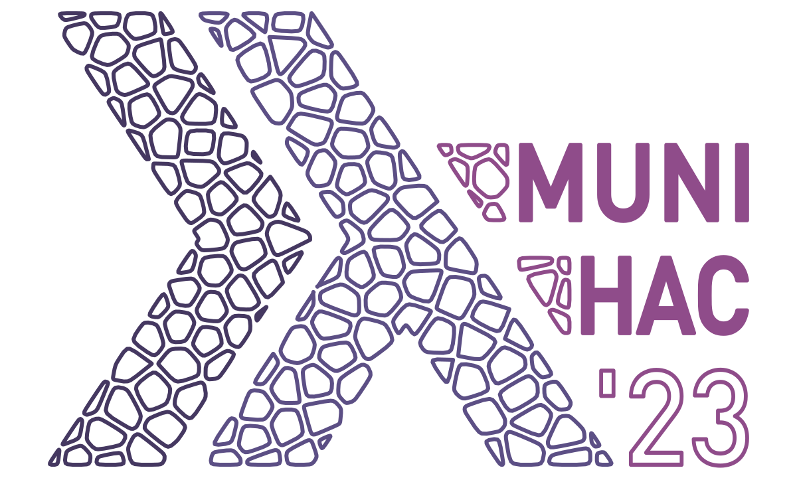

MuniHac is an annual three-day hackathon and conference in Munich that brings together Haskell developers and enthusiasts from across the globe. This event offers a unique opportunity to improve your Haskell skills, network with experts in the community, and participate in a range of workshops, talks, and projects for both beginners and experienced developers.
This year, MuniHac will be co-located with Big Techday 23,TNG's conference on science and IT at Motorworld Munich, on Friday, July 7th. MuniHac participants are invited to attend and listen to talks from world-class speakers and explore exciting exhibits. There will be a dedicated MuniHac track with a distinct focus on Haskell development. On Saturday and Sunday, we will continue MuniHac with hacking and workshops as usual at the premises of TNG Technology Consulting GmbH, located at Beta-Straße 13a (Unterföhring, Munich).
If you're unable to attend in person, most talks will be streamed via Zoom.us, the link will be provided on the Big Techday agenda page. You can also catch up on most talks on YouTube after the event.
MuniHac 2023 will take place at two different locations!
On July 7th we will gather at Motorworld Munich to listen to Haskell talks by world-class speakers. You can reach Motorworl Munich at Am Ausbesserungswerk 8, 80939 München.
The Hackathon on July 8th and July 9th will take place at the premises of TNG Technology Consulting GmbH at Beta-Straße 13a (Unterföhring, Munich).
Please note that all times are CEST.
| Time | Thursday 6th July (Betastraße 13a) |
Friday 7th July (Motorworld Munich) |
Saturday 8th July (Betastraße 13a) |
Sunday 9th July (Betastraße 13a) |
|
|---|---|---|---|---|---|
| 8:00 | Big TechDay doors open | ||||
| 8:30 | Hackathon registration open | Hackathon registration open | |||
| 9:00 | Beginners Workshop | MuniHac participants are invited to visit any BigTechday talks in the morning. See Big TechDay Agenda. | Introduction + Project marketplace | Hacking! | |
| 9:30 | |||||
| 10:00 | Hacking! | ||||
| 10:30 | Andres Löh – Workshop: "Parser combinators" | Hacking! | |||
| 11:00 | |||||
| 11:30 | |||||
| 12:00 | |||||
| 12:30 | Lunch break | Lunch break | |||
| 13:30 | Beginners Workshop | Hacking! | Hacking! | ||
| 13:45 | Ryan Trinkle – React + Reflex: Harmonizing TypeScript and Haskell with Functional Reactive Programming | ||||
| 14:40 | Small break | ||||
| 14:55 | Christiaan Baaij – Haskell at the Heart of Terabit Laser Communication | Project presentations & wrap-up | |||
| 15:45 | Coffee break | ||||
| 16:15 | Simon Marlow – Glean: query your code | ||||
| 17:00 | Official end | Official end | Official end | ||
| 17:10 | Food and drinks at the Big Techday | ||||
In this talk, we'll explore how Haskell addresses challenges in high-speed laser data transmission between ground stations and satellites. We'll discuss atmospheric-induced signal deformations and the use of adaptive optics with segmented mirrors to counteract them. The crucial role of wavefront sensors operating at 5 kilohertz for managing terabit-level throughput will be highlighted.
We'll focus on mirror segment calibration, including computing 256 two-dimensional gravity points in a 3-microsecond timeframe. To overcome limitations of standard processors, we'll describe our use of the Clash compiler to transform Haskell to low-level VHDL in order to create a suitable FPGA configuration. Join us to gain insights into Haskell's efficient application and its combination with the Clash compiler in high-performance computing scenarios. A key section of the talk will be dedicated to our methodical approach in Haskell, starting from a high-level specification and refining it to a detailed specification that meets the performance requirements of 3 microseconds. Our goal is to provide a deep understanding of how Haskell, in combination with the Clash compiler, can be efficiently applied in high-performance computing scenarios.
Learn how to combine the best of both TypeScript and Haskell for frontend development. For TypeScript developers, you will learn how to take the reactive principles that made React successful to the next level with pure Functional Reactive Programming (FRP). For Haskell developers, you will learn how to easily integrate with the broader JavaScript ecosystem.
Code indexing is the technology underlying many of the essential tools in the developer's workflow, from IDEs to code search to analysis tools. But code indexing is fragmented: it's usually done differently for each language and even each tool. Technologies like LSIF aim to unify across languages, but are aimed at specific tools or use cases. Glean is an open-source code indexing system we're building at Meta that fills the gaps: scaling to multiple languages, to very large codebases, and crucially including a flexible and powerful query language ("Angle") designed specifically for querying data about code. In this talk I'm going to cover the design of Glean and in particular its interesting query language, and also cover some of the ways that functional programming was useful in building Glean.
In this introductory workshop on parser combinators we will:
This workshop should mostly be understandable for Haskell beginners. Parsers are a compelling non-trivial application of typical abstraction patterns such as applicative functors and monads and can therefore be helpful in order to build more intuition with these concepts
What's a hackathon without hacking? If you want to host a project, let us know at munihac@tngtech.com, and we'll announce it before the start. If you don't want to commit just yet, we'll also offer the opportunity tos pontaneously pitch projects on Saturday, July 8th.
To help get people get started with your project, you could also offer a workshop!
Registration is closed.
Want to keep in touch and receive updates about MuniHac? We have a Twitter account, a mailing list, and a Slack workspace.
You can reach us via email: munihac@tngtech.com.
Each participant will retain ownership of any and all intellectual and industrial property rights to his or her work created or used during the Hackathon.